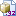

skip to content
ASTERICS Wiki pages
User Tools
Login
Site Tools
Tools
Show page
Old revisions
Backlinks
Recent changes
Media Manager
Sitemap
Login
Recent changes
Media Manager
Sitemap
Trace:
•
wp4gwstrasbourg2016
•
wp4lofarstrasbourg2016
•
wp4wp5timedomain
•
wp4gapsinaf
•
timeseriesdatameeting
•
wp4exodm
•
authnauthzf2f
•
wp4task1
•
wp4task2
•
wp4task3
open:wp5:start
Media Manager
Namespaces
Choose namespace
[root]
intra
multi
open
wp1
wp3
wp4
wp5
wiki
Media Files
Media Files
Upload
Search
Files in
open:wp5
Thumbnails
Rows
Name
Date

etransfer-0.1.tar.gz
2016/06/30 15:34
140.6 KB
File
open/wp5/start.txt
· Last modified: 2016/06/30 15:30 by
meer
Page Tools
Show page
Old revisions
Backlinks
Back to top